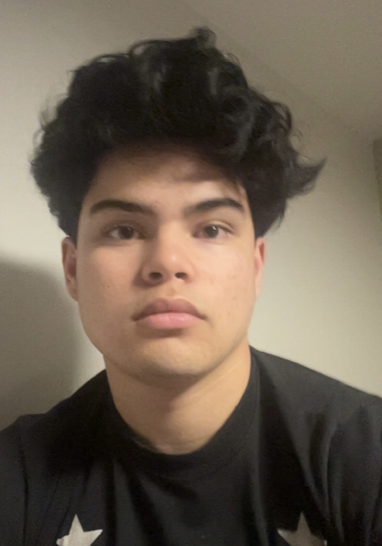

Eloheh Management Team

Eloheh is a groundbreaking healthcare service company
Get to know our team
A Group of highly qualified individuals who are changing the world
Suditi Basak- CEO

Suditi Basak is a Junior at Purdue University, double majoring in Accounting and Finance. She is originally from Seattle, WA.
At Purdue she is involved in the Brock Wilson Center, Larsen Leaders and the Griswold Consulting Internship. In her free time she is an avid traveller.
Ella Dawes- CFO

Ella Dawes is a junior at Purdue University majoring in Integrated Business and Engineering.
She is from Santa Barbara, California and in her free time loves to surf and snorkel.
Sarah Lenderman- COO

Sarah Lenderman is a senior this upcoming fall majoring in accounting & finance with a certificate in entrepreneurship.
She was born in Charlotte, NC but have lived in Seattle, WA most of her life.
She loves spending time with her friends & family, doing anything outdoors, and working with kids!
Allie Xaio- CTO

Allie Xaio is majoring in Business analytics and information management. She is from San Diego, California.
Quentin Quizon- CSO

Quentin Quizon is a sophomore majoring in finance and AI. He is from the Bay Area of California and trains MMA.
Meet the rest of our team
- Bryce Young – Director of Human Resources
- Tom Brady – Operations Manager
- Kirk Cousins – Head of Product Development
- Patrick Mahomes – Medical Director